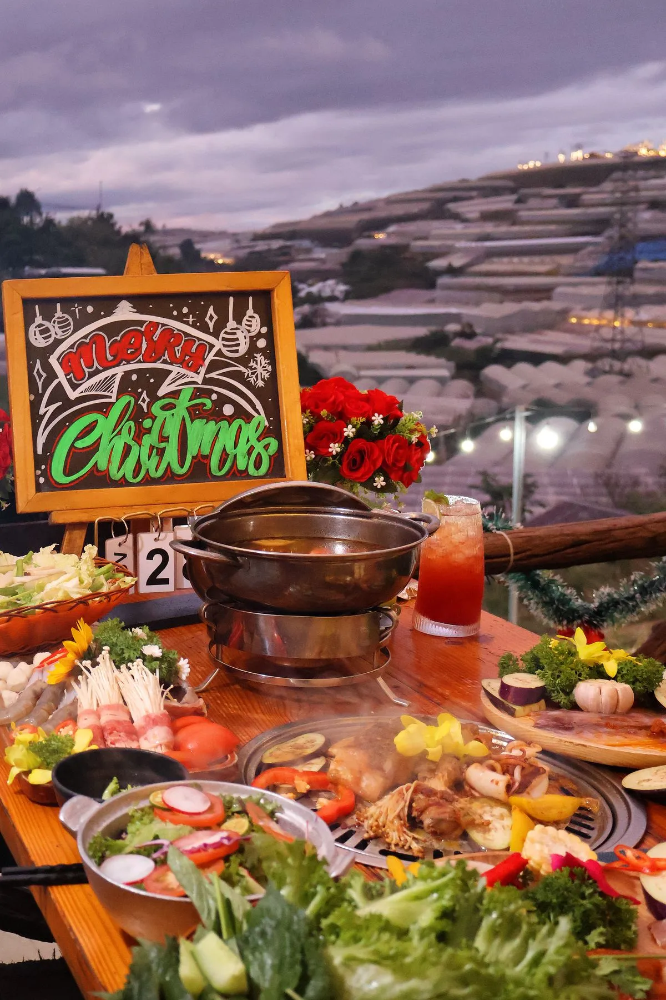

Nước chấm — Linh hồn của đồ nướng
Thịt nướng, hải sản nướng ngon bao nhiêu mà không có nước chấm phù hợp thì mất đi 50% hương vị. Mỗi quán nướng Đà Lạt đều có công thức nước chấm riêng — đó là bí quyết khiến khách quay lại. Dưới đây là 5 công thức được yêu thích nhất.
5 công thức nước chấm nướng
1. Muối ớt xanh Đà Lạt: Ớt hiểm xanh + muối hạt + chanh. Vị cay nồng, mặn vừa, chấm thịt bò nướng = tuyệt vời. Đây là nước chấm signature của nhiều quán nướng Đà Lạt.
2. Sốt chimichurri: Mùi tây + tỏi + dầu olive + giấm. Vị chua nhẹ, thơm herbs — phù hợp thịt bò, gà nướng.

3. Nước mắm tỏi ớt: Mắm ngon + đường + tỏi + ớt + chanh. Kinh điển nhất, hợp mọi loại đồ nướng.
4. Sốt chao nướng: Chao trắng + sả + ớt + đường. Đặc sản Đà Lạt, chấm rau nướng, đậu hũ nướng cực ngon.
5. Sốt gochujang Hàn Quốc: Tương ớt Hàn + mật ong + dầu mè. Vị ngọt cay, phù hợp thịt heo, gà nướng kiểu Hàn.
Nước chấm đặc biệt tại Trạm Dừng Chill
Tại Trạm Dừng Chill, mỗi set nướng đi kèm 2-3 loại nước chấm đặc biệt — muối ớt xanh Đà Lạt, nước mắm pha và sốt đặc biệt của quán. Khách yêu thích nhất là muối ớt xanh — cay nồng, chấm bò Mỹ nướng than hoa = phê! Đặt bàn thử ngay →

Kết luận
Nước chấm nướng ngon là bí quyết nâng tầm bữa BBQ. Ghé Trạm Dừng Chill để thử muối ớt xanh huyền thoại! Đặt bàn →